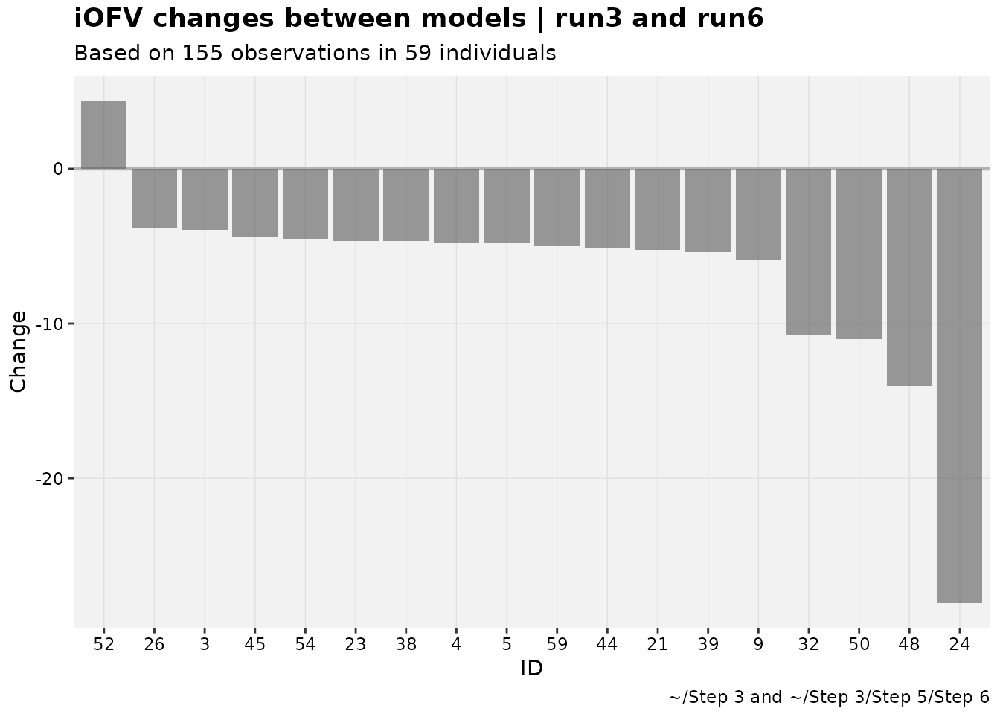
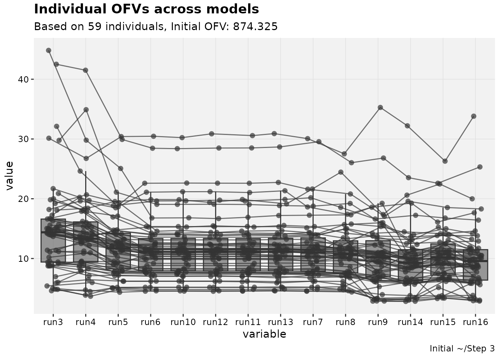

Useful uncommon plots
a03-useful_plots.RmdIntroduction
The xpose.xtras package attempts to bring old favorites
back to the xpose framework from its predecessor
xpose4, and those are named as such to allow easy access to
documentation. This vignette brings focus to the visualizations in this
package that are unlikely to be used for most projects, but are still
helpful to have when they are needed. The underlying functionality for
these plots are also useful to generalize to similar use cases that will
continue to have the benefit of being within the xpose
framework.
Model-averaged plots
Model-averaging can be useful when two or more models can describe different aspects of the data or the pharmacology, but for various reasons a mixture model or other population approach would be inadequate. It can also be helpful when multiple models have been developed for various populations and a new population being fit does not necessarily consist entirely of any previously fitted population.
This package facilitates the generation of model-averaged
diagnostics. The approach is rudimentary and experimental, merely
creating an averaged version of an xpose_data object from
an xpose_set. As referenced in the documentation, the Model
Selection and Model Averaged Algorithms used by Uster et al. are
implemented to do this averaging (?modavg_xpdb). Because
both algorithms require individual objective functions, there is an
argument to automatically apply backfill_iofv().
pheno_set %>%
ipred_vs_idv_modavg(auto_backfill = TRUE, quiet=TRUE)
#> `geom_smooth()` using formula = 'y ~ x'
#> `geom_smooth()` using formula = 'y ~ x'The default title, subtitle and caption for these experimental figures are rough, especially for large sets. Changes for better appearance should be expected in the future.
Categorical dependent variables
Categorical DVs are frequently modeled but there are a variety of
methods used to visually diagnose these modeled endpoints, typically
model-specific. Along with adding generic support for categorical DVs,
xpose.xtras also adds a few plots to diagnose models
developed for them.
To use these diagnostics, a model for a categorical DV needs to have
the column for that DV stated (if it is “DV” that needs to be ripped
away from the dv variable type), and have a column
predicting the likelihood or probability of that DV having a certain
value. An example using an M3 model is below and in the
documentation.
pkpd_m3 %>%
# Need to ensure var types are set
set_var_types(catdv=BLQ,dvprobs=LIKE) %>%
# Set probs ("LIKE is the probability tht BLQ is 1")
set_dv_probs(1, 1~LIKE, .dv_var = BLQ) %>%
# Optional, but useful to set levels
set_var_levels(1, BLQ = lvl_bin()) %>%
catdv_vs_dvprobs(quiet=TRUE)
#> `geom_smooth()` using method = 'gam' and formula = 'y ~ s(x, bs = "cs")'
#> `geom_smooth()` using method = 'gam' and formula = 'y ~ s(x, bs = "cs")'It is expected that there will be a somewhat sigmoidal or at least up- and right-ward relationship between the two sets of observations in an adequate model, but as with all diagnostics the interpretation for this plot is subjective to an extent.
All plots for categorical DVs have at most two sets of data. It is
untested what would happen if all observations fell into one category,
but it is unlikely to produce a good model. This is relevant because the
catdv functions can still be used for models that have
multiple levels, such as the vismodegib muscle spasm model (from Lu et
al.) built into the examples. For these models, the plot is essentially
dichotomizing the probability of one observation compared to the
probability of not that observation,
vismo_xpdb <- vismo_pomod %>%
set_var_types(.problem=1, catdv=DV, dvprobs=matches("^P\\d+$")) %>%
set_dv_probs(.problem=1, 0~P0,1~P1,ge(2)~P23)
vismo_xpdb %>%
catdv_vs_dvprobs(quiet=TRUE)
#> `geom_smooth()` using method = 'gam' and formula = 'y ~ s(x, bs = "cs")'
#> `geom_smooth()` using method = 'gam' and formula = 'y ~ s(x, bs = "cs")'
vismo_xpdb %>%
catdv_vs_dvprobs(cutpoint = 2, quiet=TRUE)
#> `geom_smooth()` using method = 'gam' and formula = 'y ~ s(x, bs = "cs")'
#> `geom_smooth()` using method = 'gam' and formula = 'y ~ s(x, bs = "cs")'
vismo_xpdb %>%
catdv_vs_dvprobs(cutpoint = 3, quiet=TRUE)
#> `geom_smooth()` using method = 'gam' and formula = 'y ~ s(x, bs = "cs")'
#> `geom_smooth()` using method = 'gam' and formula = 'y ~ s(x, bs = "cs")'None of the examples can be used to demonstrate this easily, but
these plots can also be model-averaged using the generic
plotfun_modavg() function.
Waterfall and objective function trends
The more common needs for an xpose_set include
model-building tables, covariate testing and visualization. However,
there are occasions where a visual description of what can be shown in
these tables can be useful.
The default waterfall plot compares scales the change in parameter values, which is intended to make relative comparisons the focus. This is especially beneficial in comparing changes in empirical Bayes estimates (EBEs).
pheno_set %>%
eta_waterfall(run3,run6, quiet=TRUE)Waterfalls can also be used as an alternative to shark plots. Scaling in that case is off by default.
pheno_set %>%
focus_qapply(backfill_iofv) %>%
iofv_waterfall(run3,run6, quiet=TRUE)
To track iOFV changes over multiple models, another plot can be used.
iofv_vs_mod(pheno_set, auto_backfill = TRUE, quiet=TRUE)